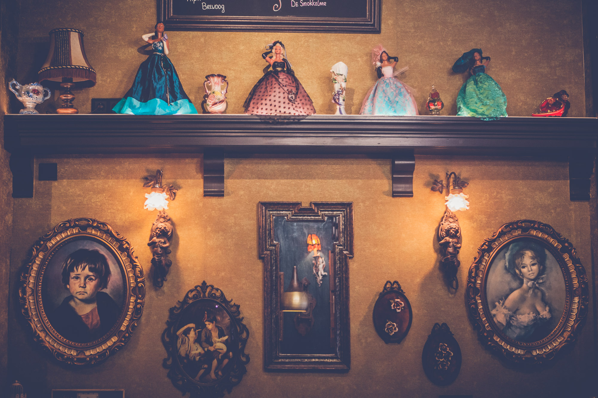
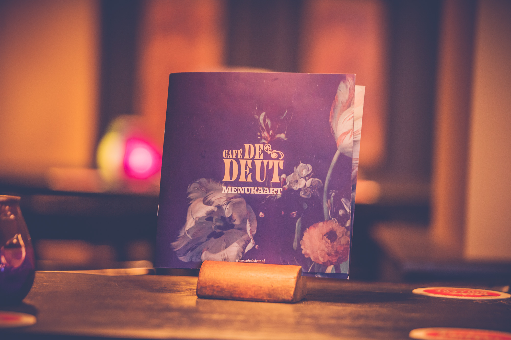

Koningstraat 36 · aan het Koningsplein, Nijmegen
Café de Deut
Het kitscherigste cafeetje van Nijmegen. Voel je welkom in onze huiskamer.
Elke dag open vanaf 11:00, zaterdag vanaf 10:00
Waar je thuiskomt
Het kitscherigste cafeetje van Nijmegen, en we dragen die naam met trots. Gelegen aan het gezellige Koningsplein.
Het is de warme huiskamer zoals alleen een huwelijk tussen je grootmoeder en John Lennon voort zou kunnen brengen. Omringd door barokke lampjes, ‘heilige’ beelden, vage snuisterijen en de mooiste speciaalbieren luister je naar de mooiste gitaarmuziek, rock ’n’ roll en classics zoals het ooit bedoeld was, en de beste hedendaagse deuntjes. Ondertussen laaf je je aan de beste bieren waar je nog nooit van gehoord hebt.
Kortom: een bastion van kneuterigheid tussen al het ‘design’ van de zoveelste hippe toko, gemeubileerd door de Ikea. Kom, zie en geniet.
Tot zo, Team Deut
Alliantie van Biertapperijen
Sinds mei 2013 zijn we lid van de ABT. Elke maand reserveren we een tap voor de ABT-primeur: het bier van de maand, voor het eerst op fust. En elke maand een uniek bier op de wisseltap en wisselfles.
Het terras
’s Zomers heeft Café de Deut het mooiste terras van Nijmegen, met passende bediening. Tijdens de zomerfeesten is het Koningsplein sowieso the place to be.
Feesten en quizavonden
We zijn (mede-)organisator van de Nijmeegse Bier- en Wijnfeesten, het Bockbierfestival, het Winterbierfestival en de verkiezing van Het beste bier van Nijmegen. In de winter kun je bij ons terecht voor huisgemaakte (muziek)quizavonden.


De Eregilde van de Deut
Wil jij deel uitmaken van de eregilde der speciaalbieren en je naam op onze wall of fame? Haal dan je stempelkaart bij de kastelein.
Speciaalbieren worden steeds uiteenlopender en de opdrachten steeds moeilijker. Dit allemaal zonder tijdslimiet: geniet op je eigen tempo van alle soorten speciaalbier die we voor je hebben uitgekozen. Stempels verzamelen terwijl je bieren drinkt die je meestal nog niet kent; een mooiere avond is er niet.
- ZilverIedereen begint bij de zilveren kaart.
- GoudDaarna volgt de gouden kaart.
- DiamantEn als afsluiter de diamanten kaart.
Werken bij Café de Deut?
Ben je op zoek naar die leuke baan in de horeca en deel je onze passie voor speciaalbier? Vertel ons wie je bent.
Kom langs
Café de Deut
Koningstraat 36
6511 LB Nijmegen
Reserveren voor de borrel? Bel of mail ons.
Openingstijden
| Maandag | 11:00 – 02:00 |
|---|---|
| Dinsdag | 11:00 – 02:00 |
| Woensdag | 11:00 – 02:00 |
| Donderdag | 11:00 – 02:00 |
| Vrijdag | 11:00 – 02:00 |
| Zaterdag | 10:00 – 02:00 |
| Zondag | 11:00 – 01:30 |
Voor de veiligheid van onze gasten en medewerkers hangen er camera’s in en rond Café de Deut. Deze beelden worden alleen bekeken als daar aanleiding voor is, zoals diefstal of wangedrag.